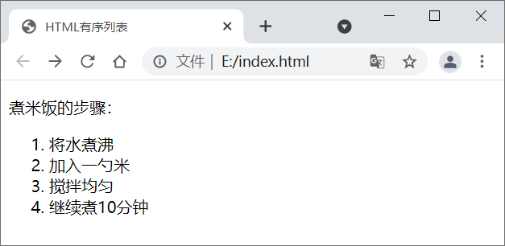
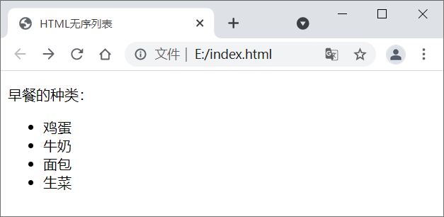
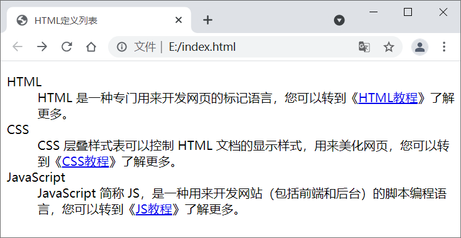
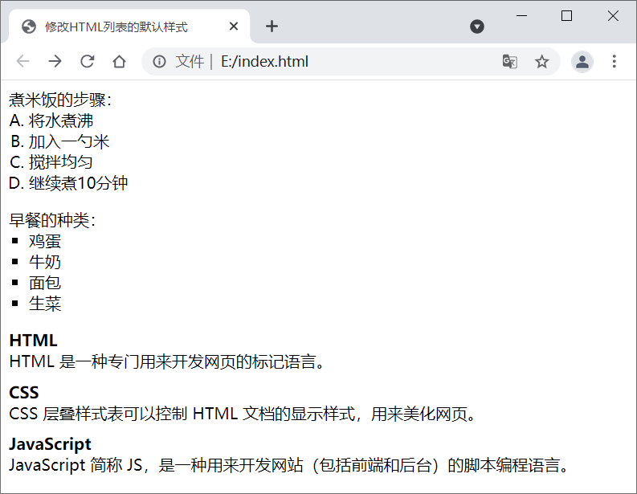

HTML列表标签：<ul><ol><dl>
HTML 列表（List）可以将若干条相关的内容整理起来，让内容看起来更加有条理。在列表内您可以放置文本、图像、链接等，也可以在一个列表中定义另一个列表（列表嵌套）。
HTML 为我们提供了三种不同形式的列表：
我们来看一个简单的实例：
有序列表需要使用 <ol> 和 <li> 标签：
注意，<ol> 一般和 <li> 配合使用，不会单独出现，而且不建议在 <ol> 中直接使用除 <li> 之外的其他标签。
我们来看一个简单的例子：
无序列表需要使用 <ul> 和 <li> 标签：
注意，<ul> 一般和 <li> 配合使用，不会单独出现，而且不建议在 <ul> 中直接使用除 <li> 之外的其他标签。
定义列表具体语法格式如下：
我们来看一个简单的例子：
<dt> 和 <dd> 虽然是同级标签，但是它们的默认样式不同，<dd> 带有一段缩进，而 <dt> 顶格显示，这样层次更加分明。
上述代码在浏览器中的运行效果：
HTML 为我们提供了三种不同形式的列表：
- 有序列表，使用 <ol> + <li> 标签
- 无序列表，使用 <ul> + <li> 标签
- 定义列表，使用 <dl> + <dt> + <dd> 标签
1. 有序列表
在 HTML 中， <ol> 标签用来表示有序列表。有序列表之间的内容有先后顺序之分，例如菜谱中的一系列步骤，这些步骤需要按顺序完成，这时就可以使用有序列表。我们来看一个简单的实例：
<!DOCTYPE html>
<html lang="en">
<head>
<meta charset="UTF-8">
<title>HTML有序列表</title>
</head>
<body>
<p>煮米饭的步骤：</p>
<ol>
<li>将水煮沸</li>
<li>加入一勺米</li>
<li>搅拌均匀</li>
<li>继续煮10分钟</li>
</ol>
</body>
</html>
在浏览器中运行效果如图所示：

图1：HTML 有序列表演示
图1：HTML 有序列表演示
有序列表需要使用 <ol> 和 <li> 标签：
- <ol> 是 order list 的简称，表示有序列表，它可以为列表的每一项进行编号，默认从数字 1 开始。
- <li> 是 list item 的简称，表示列表的每一项，<ol> 中有多少个 <li> 就表示有多少条内容。列表项中可以包含文本、图片、链接等，甚至还可以是另外一个列表。
注意，<ol> 一般和 <li> 配合使用，不会单独出现，而且不建议在 <ol> 中直接使用除 <li> 之外的其他标签。
2. 无序列表
HTML 使用 <ul> 标签来表示无序列表。无序列表和有序列表类似，都是使用 <li> 标签来表示列表的每一项，但是无序列表之间的内容没有顺序。例如，早饭的种类不需要表明顺序，这时就可以使用无序列表。我们来看一个简单的例子：
<!DOCTYPE html>
<html lang="en">
<head>
<meta charset="UTF-8">
<title>HTML无序列表</title>
</head>
<body>
<p>早餐的种类：</p>
<ul>
<li>鸡蛋</li>
<li>牛奶</li>
<li>面包</li>
<li>生菜</li>
</ul>
</body>
</html>
浏览器运行结果如图所示：

图2：HTML 无序列表演示
图2：HTML 无序列表演示
无序列表需要使用 <ul> 和 <li> 标签：
- <ul> 是 unordered list 的简称，表示无序列表。
-
<ul> 和 <ol> 中的 <li> 一样，都表示列表中的每一项。默认情况下，无序列表的每一项都使用
●符号表示。
注意，<ul> 一般和 <li> 配合使用，不会单独出现，而且不建议在 <ul> 中直接使用除 <li> 之外的其他标签。
3. 定义列表
在 HTML 中，<dl> 标签用于创建定义列表。定义列表由标题（术语）和描述两部分组成，描述是对标题的解释和说明，标题是对描述的总结和提炼。定义列表具体语法格式如下：
<dl>
<dt>标题1<dt>
<dd>描述文本2<dd>
<dt>标题2<dt>
<dd>描述文本2<dd>
<dt>标题3<dt>
<dd>描述文本3<dd>
</dl>
- <dl> 是 definition list 的简称，表示定义列表。
- <dt> 是 definition term 的简称，表示定义术语，也就是我们说的标题。
- <dd> 是 definition description 的简称，表示定义描述 。
可以认为 <dt> 定义了一个概念（术语），<dd> 用来对概念（术语）进行解释。
注意，<dt> 和 <dd> 是同级标签，它们都是 <dl> 的子标签。一般情况下，每个 <dt> 搭配一个 <dd>，一个 <dl> 可以包含多对 <dt> 和 <dd>。我们来看一个简单的例子：
<!DOCTYPE html>
<html lang="en">
<head>
<meta charset="UTF-8">
<title>HTML定义列表</title>
</head>
<body>
<dl>
<dt>HTML</dt>
<dd>HTML 是一种专门用来开发网页的标记语言，您可以转到《<a href="http://c.biancheng.net/html/" target="_blank">HTML教程</a>》了解更多。</dd>
<dt>CSS</dt>
<dd>CSS 层叠样式表可以控制 HTML 文档的显示样式，用来美化网页，您可以转到《<a href="http://c.biancheng.net/css3/" target="_blank">CSS教程</a>》了解更多。</dd>
<dt>JavaScript</dt>
<dd>JavaScript 简称 JS，是一种用来开发网站（包括前端和后台）的脚本编程语言，您可以转到《<a href="http://c.biancheng.net/js/" target="_blank">JS教程</a>》了解更多。</dd>
</dl>
</body>
</html>
浏览器运行效果如下图：

图3：HTML 定义列表演示
图3：HTML 定义列表演示
<dt> 和 <dd> 虽然是同级标签，但是它们的默认样式不同，<dd> 带有一段缩进，而 <dt> 顶格显示，这样层次更加分明。
4. 列表的默认样式
浏览器会对列表设置一些默认样式，包括外边距、内边距和列表项标记，我们可以通过 CSS 样式表的 margin、padding 和 list-style 属性来修改它们，请看下面的例子：
<!DOCTYPE html>
<html lang="en">
<head>
<meta charset="UTF-8">
<title>修改HTML列表的默认样式</title>
</head>
<body>
<p style="margin:0px auto;">煮米饭的步骤：</p>
<ol style="margin:0px auto; padding-left:20px; list-style:upper-latin;">
<li>将水煮沸</li>
<li>加入一勺米</li>
<li>搅拌均匀</li>
<li>继续煮10分钟</li>
</ol>
<p style="margin-bottom:0px;">早餐的种类：</p>
<ul style="margin:0px auto; padding-left:20px; list-style:square;">
<li>鸡蛋</li>
<li>牛奶</li>
<li>面包</li>
<li>生菜</li>
</ul>
<dl style="margin-bottom:0px;">
<dt><b>HTML</b></dt>
<dd style="margin:auto auto 10px 0px;">HTML 是一种专门用来开发网页的标记语言。</dd>
<dt><b>CSS</b></dt>
<dd style="margin:auto auto 10px 0px;">CSS 层叠样式表可以控制 HTML 文档的显示样式，用来美化网页。</dd>
<dt><b>JavaScript</b></dt>
<dd style="margin:auto auto 10px 0px;">JavaScript 简称 JS，是一种用来开发网站（包括前端和后台）的脚本编程语言。</dd>
</dl>
</body>
</html>
对 CSS 样式的说明：
-
margin:0px auto;将上下外边距设置为 0 像素，将左右外边距设置为自动。 -
margin-bottom:0px;将下方外边距设置为 0 像素。 -
margin:auto auto 10px 0px;将上方和右侧外边距设置为自动，将下方外边距设置为 10 像素，将左侧外边距设置为 0 像素。 -
padding-left:20px;将左侧内边距设置为 20 像素。 -
list-style:upper-latin;将列表项标记设置为大写拉丁字母。 -
list-style:square;将列表项标记设置为实心方块。
上述代码在浏览器中的运行效果：

图4：修改 HTML 列表的默认样式
图4：修改 HTML 列表的默认样式
5. 总结
| 列表分类 | 说明 |
|---|---|
| 有序列表 | <ol> 表示有序列表，<li> 表示列表中的每一项，默认使用阿拉伯数字编号。 |
| 无序列表 |
<ul> 表示无序列表，<li> 表示列表中的每一项，默认使用●符号作为作为每一项的标记。 |
| 定义列表 | <dl> 表示定义列表，<dt> 表示定义术语、<dd> 表示定义描述。一般情况下，每个 <dt> 搭配一个 <dd>，一个 <dl> 可以包含多对 <dt> 和 <dd>。 |
关注公众号「站长严长生」，在手机上阅读所有教程，随时随地都能学习。内含一款搜索神器，免费下载全网书籍和视频。

微信扫码关注公众号